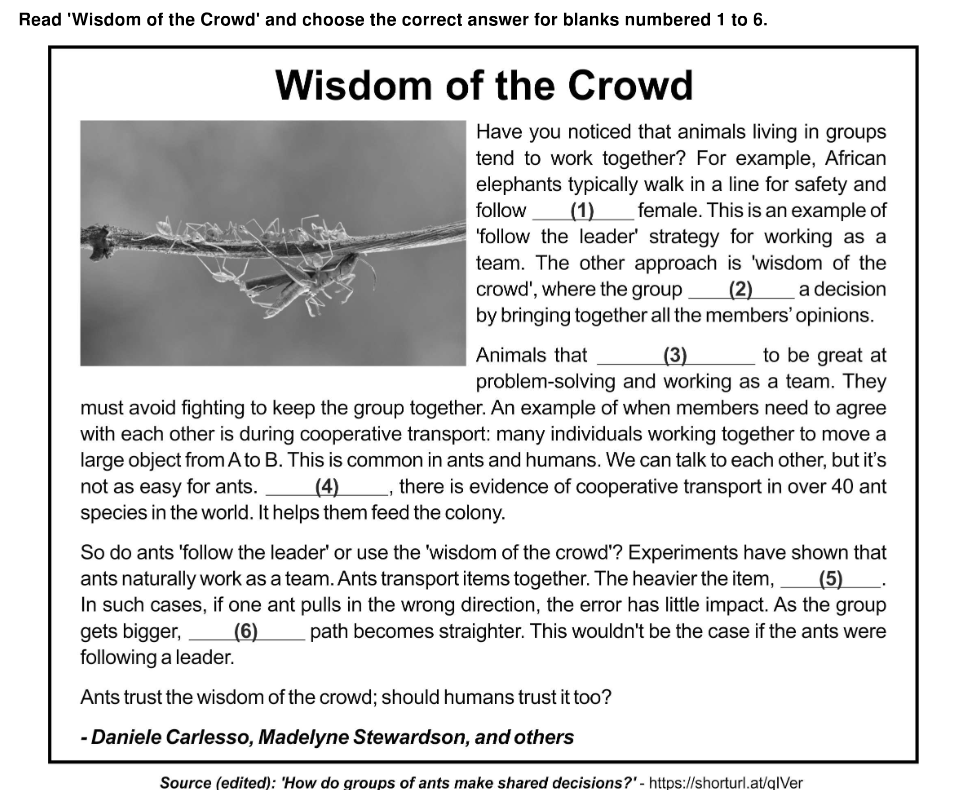

Question 14
Rice Pudding
What is the matter with Mary Jane?
She’s crying with all her might and main,
And she won’t eat her dinner—rice pudding again—
What is the matter with Mary Jane? (4)
What is the matter with Mary Jane?
I’ve promised her dolls and a daisy-chain,
And a book about animals—all in vain—
What is the matter with Mary Jane? (8)
What is the matter with Mary Jane?
She’s perfectly well, and she hasn’t a pain;
But, look at her, now she’s beginning again!—
What is the matter with Mary Jane? (16)
What is the matter with Mary Jane?
I’ve promised her sweets and a ride in the train,
And I’ve begged her to stop for a bit and explain—
What is the matter with Mary Jane? (20)
What is the matter with Mary Jane?
She’s perfectly well and she hasn’t a pain,
And it’s lovely rice pudding for dinner again!—
What is the matter with Mary Jane? (24)

- ⚪ Option A
- ✅ Option B
- ⚪ Option C
- ⚪ Option D
📊 ASSET BENCHMARKING
| Category | A | B | C | D |
|---|---|---|---|---|
| National Performance | 24.86% | 39.48% | 11.45% | 23.29% |
| Top 10 Benchmarked Schools | 16.96% | 51.66% | 8.91% | 21.60% |
| Top performing ASSET school | 11.59% | 67.39% | 5.80% | 13.77% |
BRANCH PERFORMANCE RANKING
| Branch | Score |
|---|---|
| DPS, New Delhi | 67.4% |
| DPS, Vasant Kunj, New Delhi | 56.4% |
| DPS, Knowledge Park -V, Greater Noida | 47.5% |
| DPS, Greater Noida | 41.8% |
| DPS, Mathura Road, New Delhi | 41.7% |
| DPS, Bulandshahr | 40.8% |
| DPS, R.K. Puram, New Delhi | 40.8% |
| DPS, Sector-30, Noida, Noida | 39.8% |
| DPS, Sec 122, Noida | 37.8% |
| DPS, Navi Mumbai, Navi Mumbai | 35.4% |
| DPS, Faridabad | 33.4% |
| DPS, Rohini, New Delhi | 30.5% |
Question 15
- ⚪ Option :a child's need to be fed rice pudding by the speaker
- ⚪ Option B: a child's strange reaction to her favourite food
- ⚪ Option C:a child's desire to play with the speaker
- ✅ Option D:a child's actions confusing the speaker
📊 ASSET BENCHMARKING
| Category | A | B | C | D |
|---|---|---|---|---|
| National Performance | 30.41% | 30.05% | 6.05% | 32.78% |
| Top 10 Benchmarked Schools | 19.41% | 31.38% | 3.16% | 45.39% |
| Top performing ASSET school | 20.48% | 18.07% | 3.61% | 57.83% |
BRANCH PERFORMANCE RANKING
| Branch | Score |
|---|---|
| DPS, Vasant Kunj, New Delhi | 56.8% |
| DPS, Sector-30, Noida, Noida | 46.8% |
| DPS, Navi Mumbai, Navi Mumbai | 37.0% |
| DPS, R.K. Puram, New Delhi | 35.7% |
| DPS, Knowledge Park -V, Greater Noida | 35.0% |
| DPS, Sec 122, Noida | 34.6% |
| DPS, Greater Noida | 31.5% |
| DPS, Rohini, New Delhi | 28.9% |
| DPS, Mathura Road, New Delhi | 27.7% |
| DPS, Faridabad | 26.8% |
| DPS, Bulandshahr | 24.9% |
| DPS, New Delhi | 17.8% |
Question 20
DIY T-Shirt Tote Bag
Reuse an old T-shirt by making your own no-sew T-shirt tote bag. These totes can be used as an everyday bag. They are also good for storing plastic bags or as a replacement for small trash bags.
Materials:
- Short or long-sleeved T-shirt (make sure it is not too stretchy)
- Scissors
Steps:
Step 1:
Fold the t-shirt in half to align the stitching of the sleeves.
Cut along the inside of the stitching. Now the T-shirt is a sleeveless top!
Step 2:
Unfold and cut out the neck. Be sure to cut a deep 'U' shape for the handles!
Step 3:
Flip the t-shirt inside out and make sure that the bottom edges are even and smooth.
Step 4:
Cut slits about 2–3 inches long and half an inch wide at the bottom of the T-shirt.
This will create a fringe.
Step 5:
Use double knots to tie the strips. This will become the bottom of the bag.
Step 6:
Turn the shirt right-side out again.
There it is! You now have a usable t-shirt tote bag. (You’ll notice how firm the bottom is after turning it right-side out.) Worried about any stale odours? Just toss the tote in the washing machine— it’s washable like any t-shirt!

- ⚪ Option A:a T-shirt with holes in the sleeves
- ✅ Option B: a T-shirt made with a weak fabric
- ⚪ Option C:a T-shirt that is brand new
- ⚪ Option :a T-shirt that is printed
📊 ASSET BENCHMARKING
| Category | A | B | C | D |
|---|---|---|---|---|
| National Performance | 19.10% | 41.68% | 30.53% | 7.80% |
| Top 10 Benchmarked Schools | 10.95% | 44.37% | 39.53% | 4.43% |
| Top performing ASSET school | 16.92% | 54.14% | 23.31% | 3.76% |
BRANCH PERFORMANCE RANKING
| Branch | Score |
|---|---|
| DPS, Vasant Kunj, New Delhi | 54.1% |
| DPS, Sector-30, Noida, Noida | 44.8% |
| DPS, Knowledge Park -V, Greater Noida | 44.2% |
| DPS, Greater Noida | 44.2% |
| DPS, Rohini, New Delhi | 40.5% |
| DPS, Faridabad | 40.1% |
| DPS, Sec 122, Noida | 39.4% |
| DPS, Mathura Road, New Delhi | 36.3% |
| DPS, Bulandshahr | 35.3% |
| DPS, R.K. Puram, New Delhi | 34.8% |
| DPS, Navi Mumbai, Navi Mumbai | 31.8% |
| DPS, New Delhi | 24.6% |
Question 26
Super Siren
by Empire
WITH REAL POLICE SOUND!
REQUIRES 2 'AA' BATTERIES (NOT INCLUDED)
WATCH OUT, BOBBY!
I'M SORRY, MR. JONES.
(SCREEEE)
BOBBY, MR. JONES TOLD ME WHAT HAPPENED! YOU'RE PUNISHED, NO MORE BIKE RIDING!
(BOBBY FEELING BADLY IS NOW OUT WALKING AND...)
WOW! THIS IS JUST WHAT I NEED!
(BOBBY RUNS HOME WITH THE SUPER SIREN AND PUTS IT ON HIS BIKE!)
HEY MOM! LOOK WHAT I GOT FOR MY BIKE!
OKAY, BOBBY, NOW YOU CAN RIDE YOUR BIKE!
GOOD BOY, BOBBY, GO ON AND PASS!
(WOO-WOO-WOOO!)
THANKS, MR. JONES!
KIDS! PLAY IT SAFE!
GET A SUPER SIREN FOR YOUR HOT CYCLE, TRIKE* OR BIKE!
(AS SEEN ON TV)
SUPER SIREN
POST OFFICE BOX 826
NEW YORK
Yes! Please rush my order so I can be the first on my block to have a SUPER SIREN!
(EMPIRE – TOYS KIDS LOVE)
AVAILABLE AT ALL TOY & HOBBY STORES!
 Why is Bobby excited in the following scene?
Why is Bobby excited in the following scene?
- ⚪ Option A:He spotted something he had seen on TV.
- ✅ Option B:He found a way to impress his friends.
- ⚪ Option C:He found a solution to his problem.
- ⚪ Option D:He had been wanting to buy a toy.
📊 ASSET BENCHMARKING
| Category | A | B | C | D |
|---|---|---|---|---|
| National Performance | 11.01% | 6.91% | 71.01% | 10.11% |
| Top 10 Benchmarked Schools | 6.52% | 3.16% | 84.77% | 4.48% |
| Top performing ASSET school | 5.88% | 0.00% | 94.12% | 0.00% |
BRANCH PERFORMANCE RANKING
| Branch | Score |
|---|---|
| DPS, New Delhi | 72.8% |
| DPS, R.K. Puram, New Delhi | 71.5% |
| DPS, Faridabad | 71.2% |
| DPS, Sec 122, Noida | 64.6% |
| DPS, Vasant Kunj, New Delhi | 54.1% |
| DPS, Sector-30, Noida, Noida | 44.8% |
| DPS, Knowledge Park -V, Greater Noida | 44.2% |
| DPS, Greater Noida | 44.2% |
| DPS, Rohini, New Delhi | 40.5% |
| DPS, Mathura Road, New Delhi | 36.3% |
| DPS, Bulandshahr | 35.3% |
| DPS, Navi Mumbai, Navi Mumbai | 31.8% |
Question 29
- ⚪ Option A: to compare different bike tools
- ⚪ Option B:to show the joys of riding a bike
- ⚪ Option C:to inform people about a new invention
- ✅ Option Dto encourage people to buy a new product
📊 ASSET BENCHMARKING
| Category | A | B | C | D |
|---|---|---|---|---|
| National Performance | 10.09% | 23.40% | 28.49% | 36.42% |
| Top 10 Benchmarked Schools | 6.16% | 14.93% | 28.37% | 49.16% |
| Top performing ASSET school | 0.00% | 11.11% | 16.67% | 72.22% |
BRANCH PERFORMANCE RANKING
| Branch | Score |
|---|---|
| DPS, Sector-30, Noida, Noida | 69.8% |
| DPS, Vasant Kunj, New Delhi | 69.5% |
| DPS, Knowledge Park -V, Greater Noida | 64.7% |
| DPS, Navi Mumbai, Navi Mumbai | 58.2% |
| DPS, R.K. Puram, New Delhi | 54.4% |
| DPS, Sec 122, Noida | 49.6% |
| DPS, Greater Noida | 48.8% |
| DPS, Bulandshahr | 36.2% |
| DPS, Faridabad | 34.3% |
| DPS, Mathura Road, New Delhi | 34.2% |
| DPS, New Delhi | 33.0% |
| DPS, Rohini, New Delhi | 27.9% |
Question 17
How much of the cheese she has is needed for the recipe?
- ⚪ Option A:all of it
- ✅ Option B:half of it
- ⚪ Option C: double of it
- ⚪ Option D:quarter of it
📊 ASSET BENCHMARKING
| Category | A | B | C | D |
|---|---|---|---|---|
| National Performance | 19.75% | 15.50% | 7.49% | 56.30% |
| Top 10 Benchmarked Schools | 13.70% | 8.91% | 6.72% | 69.89% |
| Top performing ASSET school | 0.00% | 9.09% | 0.00% | 81.82% |
BRANCH PERFORMANCE RANKING
| Branch | Score |
|---|---|
| DPS, Vasant Kunj, New Delhi | 60.5% |
| DPS, New Delhi | 54.2% |
| DPS, Rohini, New Delhi | 53.7% |
| DPS, Knowledge Park -V, Greater Noida | 53.1% |
| DPS, Sector-30, Noida, Noida | 46.9% |
| DPS, Greater Noida | 41.0% |
| DPS, Navi Mumbai, Navi Mumbai | 40.7% |
| DPS, R.K. Puram, New Delhi | 40.0% |
| DPS, Faridabad | 37.9% |
| DPS, Mathura Road, New Delhi | 37.5% |
| DPS, Sec 122, Noida | 35.4% |
| DPS, Bulandshahr | 34.3% |
Question 18

Which of these is the fixed radius used to make the design?
- ⚪ Option A:PQ
- ✅ Option B:PR
- ⚪ Option C:PS
- ⚪ Option D:PT
📊 ASSET BENCHMARKING
| Category | A | B | C | D |
|---|---|---|---|---|
| National Performance | 73.70% | 9.32% | 6.76% | 9.43% |
| Top 10 Benchmarked Schools | 85.53% | 5.30% | 2.95% | 5.55% |
| Top performing ASSET school | 92.50% | 7.50% | 0.00% | 0.00% |
BRANCH PERFORMANCE RANKING
| Branch | Score |
|---|---|
| DPS, New Delhi | 44.4% |
| DPS, Vasant Kunj, New Delhi | 43.6% |
| DPS, Sector-30, Noida, Noida | 27.1% |
| DPS, Knowledge Park -V, Greater Noida | 18.7% |
| DPS, Mathura Road, New Delhi | 18.1% |
| DPS, Bulandshahr | 17.5% |
| DPS, Faridabad | 15.9% |
| DPS, R.K. Puram, New Delhi | 15.8% |
| DPS, Rohini, New Delhi | 15.8% |
| DPS, Sec 122, Noida | 15.8% |
| DPS, Navi Mumbai, Navi Mumbai | 15.4% |
| DPS, Greater Noida | 12.7% |
Question 19
- ⚪ Option A:400 × 60
- ⚪ Option B: 400 × 70
- ⚪ Option C:500 × 60
- ✅ Option D:500 × 70
📊 ASSET BENCHMARKING
| Category | A | B | C | D |
|---|---|---|---|---|
| National Performance | 31.14% | 54.73% | 5.56% | 7.77% |
| Top 10 Benchmarked Schools | 21.19% | 71.06% | 2.85% | 4.23% |
| Top performing ASSET school | 17.44% | 80.23% | 1.16% | 1.16% |
BRANCH PERFORMANCE RANKING
| Branch | Score |
|---|---|
| DPS, Vasant Kunj, New Delhi | 64.7% |
| DPS, New Delhi | 60.7% |
| DPS, Knowledge Park -V, Greater Noida | 49.9% |
| DPS, Sector-30, Noida, Noida | 44.0% |
| DPS, Navi Mumbai, Navi Mumbai | 39.1% |
| DPS, Rohini, New Delhi | 38.4% |
| DPS, Bulandshahr | 37.5% |
| DPS, Greater Noida | 37.5% |
| DPS, Sec 122, Noida | 36.2% |
| DPS, Mathura Road, New Delhi | 35.4% |
| DPS, Faridabad | 32.7% |
| DPS, R.K. Puram, New Delhi | 32.4% |
Question 32

She wants to group all the tulips together and all the roses together. She can only swap the positions of two flowers that are next to each other.
What is the minimum number of swaps needed to arrange the flowers?
(Note: ‘Swap’ means to exchange the position of any two flowers NEXT to each other.)
- ⚪ Option A:8
- ⚪ Option B:5
- ✅ Option C:4
- ⚪ Option D:3
📊 ASSET BENCHMARKING
| Category | A | B | C | D |
|---|---|---|---|---|
| National Performance | 25.05% | 12.28% | 48.02% | 13.14% |
| Top 10 Benchmarked Schools | 19.82% | 6.01% | 61.33% | 11.92% |
| Top performing ASSET school | 15.00% | 4.00% | 68.00% | 12.00% |
BRANCH PERFORMANCE RANKING
| Branch | Score |
|---|---|
| DPS, New Delhi | 44.0% |
| DPS, Knowledge Park -V, Greater Noida | 37.4% |
| DPS, Sector-30, Noida, Noida | 37.3% |
| DPS, Sec 122, Noida | 33.9% |
| DPS, Rohini, New Delhi | 33.7% |
| DPS, Navi Mumbai, Navi Mumbai | 33.0% |
| DPS, Bulandshahr | 31.7% |
| DPS, Mathura Road, New Delhi | 30.4% |
| DPS, Greater Noida | 30.2% |
| DPS, Faridabad | 30.1% |
| DPS, R.K. Puram, New Delhi | 27.6% |
| DPS, Vasant Kunj, New Delhi | 26.3% |
Question 39

What is the SUM of these two page numbers?
- ✅ Option A:25
- ⚪ Option B:32
- ⚪ Option C:17+18
- ⚪ Option D:22+23
📊 ASSET BENCHMARKING
| Category | A | B | C | D |
|---|---|---|---|---|
| National Performance | 21.72% | 7.84% | 6.92% | 61.26% |
| Top 10 Benchmarked Schools | 13.96% | 3.82% | 3.31% | 78.09% |
| Top performing ASSET school | 11.76% | 0.00% | 0.00% | 88.24% |
BRANCH PERFORMANCE RANKING
| Branch | Score |
|---|---|
| DPS, Vasant Kunj, New Delhi | 45.5% |
| DPS, Knowledge Park -V, Greater Noida | 31.8% |
| DPS, Sector-30, Noida, Noida | 28.9% |
| DPS, New Delhi | 28.4% |
| DPS, Rohini, New Delhi | 26.3% |
| DPS, Faridabad | 25.1% |
| DPS, Navi Mumbai, Navi Mumbai | 23.4% |
| DPS, R.K. Puram, New Delhi | 23.0% |
| DPS, Bulandshahr | 19.1% |
| DPS, Greater Noida | 18.1% |
| DPS, Sec 122, Noida | 16.5% |
| DPS, Mathura Road, New Delhi | 13.7% |
Question 10

A bus is moving around in this neighbourhood. The seating arrangement in the bus is shown below.

At 5:30 P.M., the bus starts from the shopping mall along the Mall Road. It takes the first left after the book store, continues moving straight, and takes a right turn at the dead-end. It then drives straight till the end of the road, and the bus ride ends here.
Which seat is likely to get the most sunlight when the ride ends?
- ⚪ Option A:P
- ⚪ Option B:Q
- ✅ Option C:R/li>
- ⚪ Option D:S
📊 ASSET BENCHMARKING
| Category | A | B | C | D |
|---|---|---|---|---|
| National Performance | 21.23% | 54.51% | 14.78% | 8.20% |
| Top 10 Benchmarked Schools | 15.13% | 69.99% | 9.22% | 4.53% |
| Top performing ASSET school | 0.00% | 90.91% | 0.00% | 9.09% |
BRANCH PERFORMANCE RANKING
| Branch | Score |
|---|---|
| DPS, Vasant Kunj, New Delhi | 65.0% |
| DPS, Knowledge Park -V, Greater Noida | 37.4% |
| DPS, Bulandshahr | 36.6% |
| DPS, Navi Mumbai, Navi Mumbai | 35.6% |
| DPS, Sector-30, Noida, Noida | 33.8% |
| DPS, R.K. Puram, New Delhi | 33.3% |
| DPS, Sec 122, Noida | 32.8% |
| DPS, Faridabad | 32.8% |
| DPS, Rohini, New Delhi | 32.1% |
| DPS, Greater Noida | 31.5% |
| DPS, New Delhi | 25.8% |
| DPS, Mathura Road, New Delhi | 22.0% |
Question 12

Identify the correct stamp that can make the pattern shown.

- ⚪ Option A:A
- ✅ Option B:B
- ⚪ Option C:C
- ⚪ Option D:D
📊 ASSET BENCHMARKING
| Category | A | B | C | D |
|---|---|---|---|---|
| National Performance | 75.68% | 8.14% | 8.19% | 7.29% |
| Top 10 Benchmarked Schools | 86.50% | 4.48% | 3.36% | 5.04% |
| Top performing ASSET school | 94.12% | 0.00% | 5.88% | 0.00% |
BRANCH PERFORMANCE RANKING
| Branch | Score |
|---|---|
| DPS, Vasant Kunj, New Delhi | 79.7% |
| DPS, New Delhi | 62.9% |
| DPS, Knowledge Park -V, Greater Noida | 55.2% |
| DPS, Sector-30, Noida, Noida | 37.0% |
| DPS, Sec 122, Noida | 29.6% |
| DPS, Rohini, New Delhi | 29.5% |
| DPS, Greater Noida | 29.4% |
| DPS, Navi Mumbai, Navi Mumbai | 27.5% |
| DPS, Bulandshahr | 26.9% |
| DPS, Faridabad | 25.8% |
| DPS, Mathura Road, New Delhi | 20.2% |
| DPS, R.K. Puram, New Delhi | 16.7% |
Question 13
Gurpreet: Reported his results exactly as they were.
Arfath: Altered her observations to match the result given in the textbook.
Meena: Compared her results with her friends' and adjusted her results accordingly.
Lisa: Altered the steps of the experiment until she obtained the result given in the textbook.
Which student's approach was the most appropriate for handling the situation?
- ✅ Option A:Gurpreet
- ⚪ Option B:Arfath
- ⚪ Option C:Meena
- ⚪ Option D:Lisa
📊 ASSET BENCHMARKING
| Category | A | B | C | D |
|---|---|---|---|---|
| National Performance | 19.52% | 8.79% | 52.85% | 17.97% |
| Top 10 Benchmarked Schools | 12.99% | 3.26% | 73.15% | 9.73% |
| Top performing ASSET school | 2.50% | 10.00% | 82.50% | 5.00% |
BRANCH PERFORMANCE RANKING
| Branch | Score |
|---|---|
| DPS, Vasant Kunj, New Delhi | 61.3% |
| DPS, New Delhi | 53.5% |
| DPS, Rohini, New Delhi | 42.1% |
| DPS, Knowledge Park -V, Greater Noida | 32.3% |
| DPS, Navi Mumbai, Navi Mumbai | 29.8% |
| DPS, Sector-30, Noida, Noida | 28.0% |
| DPS, R.K. Puram, New Delhi | 27.8% |
| DPS, Faridabad | 25.2% |
| DPS, Mathura Road, New Delhi | 24.7% |
| DPS, Greater Noida | 22.6% |
| DPS, Sec 122, Noida | 19.2% |
| DPS, Bulandshahr | 16.5% |
Question 15

Which of the following could be the fence?

- ✅ Option A:A
- ⚪ Option B:B
- ⚪ Option C:C
- ⚪ Option D:D
📊 ASSET BENCHMARKING
| Category | A | B | C | D |
|---|---|---|---|---|
| National Performance | 30.41% | 30.05% | 6.05% | 32.78% |
| Top 10 Benchmarked Schools | 19.41% | 31.38% | 3.16% | 45.39% |
| Top performing ASSET school | 20.48% | 18.07% | 3.61% | 57.83% |
BRANCH PERFORMANCE RANKING
| Branch | Score |
|---|---|
| DPS, Vasant Kunj, New Delhi | 64.7% |
| DPS, Knowledge Park -V, Greater Noida | 49.9% |
| DPS, Navi Mumbai, Navi Mumbai | 43.7% |
| DPS, Sector-30, Noida, Noida | 38.2% |
| DPS, Faridabad | 32.5% |
| DPS, Rohini, New Delhi | 29.5% |
| DPS, Greater Noida | 25.6% |
| DPS, Mathura Road, New Delhi | 20.8% |
| DPS, R.K. Puram, New Delhi | 16.2% |
| DPS, Bulandshahr | 12.6% |
| DPS, Sec 122, Noida | 12.0% |
| DPS, New Delhi | 11.3% |
Question 23
- ✅ Option A:human, zebra, elephant
- ⚪ Option B:lion, sparrow, polar bear
- ⚪ Option C: monkey, owl, squirrel
- ⚪ Option D:buffalo, snake, crow
📊 ASSET BENCHMARKING
| Category | A | B | C | D |
|---|---|---|---|---|
| National Performance | 18.55% | 19.03% | 50.75% | 10.59% |
| Top 10 Benchmarked Schools | 9.88% | 13.35% | 70.05% | 6.01% |
| Top performing ASSET school | 7.41% | 11.11% | 78.52% | 2.22% |
BRANCH PERFORMANCE RANKING
| Branch | Score |
|---|---|
| DPS, Vasant Kunj, New Delhi | 59.0% |
| DPS, New Delhi | 42.9% |
| DPS, Greater Noida | 37.7% |
| DPS, Knowledge Park -V, Greater Noida | 31.2% |
| DPS, Navi Mumbai, Navi Mumbai | 30.4% |
| DPS, Mathura Road, New Delhi | 30.4% |
| DPS, Rohini, New Delhi | 26.8% |
| DPS, R.K. Puram, New Delhi | 25.6% |
| DPS, Faridabad | 21.4% |
| DPS, Bulandshahr | 20.7% |
| DPS, Sector-30, Noida, Noida | 16.3% |
| DPS, Sec 122, Noida | 14.4% |
Question 28
Neuroplasticity: The Brain Changes Over Time!
You might have studied that the brain is a complex organ that controls everything you do. But few know this fact about the brain: it doesn't remain fixed in shape throughout your life; it can be moulded and changed. And it often does, based on your experiences. In fact, by the time you finish reading this, your brain will have changed a little bit! (1)
This brain-shaping superpower is called neuroplasticity (pronounced n(y)oo-roh-plas-tis-ih-tee). Let’s break it down: 'neuro' means ‘brain’, and 'plasticity' means ‘flexible’ or ‘changeable’. So, neuroplasticity is your brain’s ability to rewire itself. Some experiences strengthen the connections between brain cells, while others weaken them. Over time, these tiny changes affect how you think, act, and feel. (2)
Here’s how it works. Your brain contains billions of cells called neurons. They communicate through electrical signals, forming 'circuits*' for everything you do—like riding a bike or remembering a joke. The more you practise something, the stronger these circuits become. It’s like a path in a garden: rough and new at first, but clear and easy to follow eventually if used often enough. (3)
Neuroplasticity isn’t just for learning school subjects or hobbies. It also helps with social skills. Being a teenager can feel tough because you’re suddenly faced with many new social challenges: 'How do I make friends?' or 'How do I talk to someone I like?' Your brain builds fresh circuits to help you manage these moments, almost like updating its social software. Although the brain cells and the circuits already exist, we need to fine-tune them with regular use. Recent evidence shows that, between the ages of 15–20, the brain is most flexible for plasticity. (4)
It turns out that the age-old saying, 'practice makes perfect' has a neuroscientific* basis. The next time you're struggling with performing in a new situation, remember the power of neuroplasticity! (5)

- ✅ Option A:Nitin, who wants to master playing a musical instrument
- ⚪ Option B: Meera, who wants to converse with her peers with more ease
- ⚪ Option C:Ruby, who needs an inspirational idea to solve a tough problem
- ⚪ Option D:Uday, who wants to learn complex topics in a new field of study
📊 ASSET BENCHMARKING
| Category | A | B | C | D |
|---|---|---|---|---|
| National Performance | 21.27% | 33.02% | 27.57% | 16.93% |
| Top 10 Benchmarked Schools | 21.92% | 32.07% | 34.62% | 11.31% |
| Top performing ASSET school | 0.00% | 0.00% | 100.00% | 0.00% |
BRANCH PERFORMANCE RANKING
| Branch | Score |
|---|---|
| DPS, Sector-30, Noida, Noida | 44.3% |
| DPS, New Delhi | 38.2% |
| DPS, Sec 122, Noida | 37.4% |
| DPS, Faridabad | 37.1% |
| DPS, Mathura Road, New Delhi | 32.0% |
| DPS, Greater Noida | 31.5% |
| DPS, R.K. Puram, New Delhi | 31.4% |
| DPS, Vasant Kunj, New Delhi | 28.5% |
| DPS, Knowledge Park -V, Greater Noida | 28.2% |
| DPS, Rohini, New Delhi | 26.0% |
| DPS, Navi Mumbai, Navi Mumbai | 25.1% |
| DPS, Bulandshahr | 23.3% |
Question 38

- ⚪ Option A:made
- ✅ Option B:makes
- ⚪ Option C:is making
- ⚪ Option D:Not Sure
📊 ASSET BENCHMARKING
| Category | A | B | C | D |
|---|---|---|---|---|
| National Performance | 23.13% | 30.58% | 30.05% | 15.06% |
| Top 10 Benchmarked Schools | 8.06% | 39.50% | 36.87% | 15.10% |
| Top performing ASSET school | 0.00% | 100.00% | 0.00% | 0.00% |
BRANCH PERFORMANCE RANKING
| Branch | Score |
|---|---|
| DPS, New Delhi | 41.1% |
| DPS, Sector-30, Noida, Noida | 34.8% |
| DPS, Navi Mumbai, Navi Mumbai | 34.7% |
| DPS, Vasant Kunj, New Delhi | 33.2% |
| DPS, Sec 122, Noida | 33.0% |
| DPS, Greater Noida | 29.4% |
| DPS, Knowledge Park -V, Greater Noida | 27.2% |
| DPS, R.K. Puram, New Delhi | 26.6% |
| DPS, Rohini, New Delhi | 26.0% |
| DPS, Faridabad | 24.9% |
| DPS, Mathura Road, New Delhi | 24.1% |
| DPS, Bulandshahr | 21.2% |
Question 40
- ⚪ Option A: their
- ⚪ Option B: our
- ⚪ Option C: his
- ✅ Option D: its
📊 ASSET BENCHMARKING
| Category | A | B | C | D |
|---|---|---|---|---|
| National Performance | 68.87% | 9.01% | 6.17% | 14.93% |
| Top 10 Benchmarked Schools | 84.04% | 3.18% | 1.94% | 10.15% |
| Top performing ASSET school | 0.00% | 0.00% | 0.00% | 100.00% |
BRANCH PERFORMANCE RANKING
| Branch | Score |
|---|---|
| DPS, New Delhi | 36.8% |
| DPS, Vasant Kunj, New Delhi | 18.7% |
| DPS, Bulandshahr | 18.5% |
| DPS, Faridabad | 16.6% |
| DPS, R.K. Puram, New Delhi | 15.7% |
| DPS, Mathura Road, New Delhi | 14.6% |
| DPS, Navi Mumbai, Navi Mumbai | 14.6% |
| DPS, Rohini, New Delhi | 13.8% |
| DPS, Knowledge Park -V, Greater Noida | 12.1% |
| DPS, Sec 122, Noida | 11.3% |
| DPS, Sector-30, Noida, Noida | 10.6% |
| DPS, Greater Noida | 9.0% |
Question 46
- ⚪ Option A: foul - bowl
- ⚪ Option B: shop - rope
- ✅ Option C: love - brush
- ⚪ Option D: above - stove
📊 ASSET BENCHMARKING
| Category | A | B | C | D |
|---|---|---|---|---|
| National Performance | 40.79% | 9.32% | 11.82% | 36.32% |
| Top 10 Benchmarked Schools | 40.67% | 5.03% | 17.20% | 36.10% |
| Top performing ASSET school | 24.29% | 8.21% | 41.07% | 22.86% |
BRANCH PERFORMANCE RANKING
| Branch | Score |
|---|---|
| DPS, New Delhi | 41.1% |
| DPS, Greater Noida | 17.5% |
| DPS, Sector-30, Noida, Noida | 17.3% |
| DPS, R.K. Puram, New Delhi | 17.1% |
| DPS, Faridabad | 16.0% |
| DPS, Navi Mumbai, Navi Mumbai | 14.2% |
| DPS, Rohini, New Delhi | 13.8% |
| DPS, Mathura Road, New Delhi | 13.3% |
| DPS, Vasant Kunj, New Delhi | 12.8% |
| DPS, Sec 122, Noida | 12.2% |
| DPS, Bulandshahr | 10.8% |
| DPS, Knowledge Park -V, Greater Noida | 9.2% |
Question 56
- ⚪ Option A:things
- ⚪ Option B:blinds
- ⚪ Option C:clings
- ✅ Option D:blinks
📊 ASSET BENCHMARKING
| Category | A | B | C | D |
|---|---|---|---|---|
| National Performance | 13.12% | 40.13% | 23.28% | 21.92% |
| Top 10 Benchmarked Schools | 7.90% | 42.06% | 14.41% | 32.84% |
| Top performing ASSET school | 0.00% | 33.33% | 0.00% | 66.67% |
BRANCH PERFORMANCE RANKING
| Branch | Score |
|---|---|
| DPS, Greater Noida | 31.2% |
| DPS, Navi Mumbai, Navi Mumbai | 30.6% |
| DPS, Sector-30, Noida, Noida | 28.7% |
| DPS, Faridabad | 26.2% |
| DPS, Vasant Kunj, New Delhi | 26.0% |
| DPS, Mathura Road, New Delhi | 24.7% |
| DPS, R.K. Puram, New Delhi | 24.2% |
| DPS, Rohini, New Delhi | 24.0% |
| DPS, Sec 122, Noida | 21.7% |
| DPS, Bulandshahr | 17.4% |
| DPS, Knowledge Park -V, Greater Noida | 17.4% |
| DPS, New Delhi | 17.1% |
Question 26
Clues:
• The student who has a sandwich sits at the first desk.
• The student with the red notebook drinks coffee.
• The student who loves History has a cookie.
• The student who loves Hindi has the red notebook.
Who is sitting at the first desk?
- ⚪ Option A:The student who does not drink coffee.
- ⚪ Option B: The student without the red notebook.
- ⚪ Option C: The student who has a cookie.
- ✅ Option D:The student who loves Hindi.
📊 ASSET BENCHMARKING
| Category | A | B | C | D |
|---|---|---|---|---|
| National Performance | 33.02% | 26.85% | 20.19% | 18.70% |
| Top 10 Benchmarked Schools | 30.50% | 23.76% | 19.72% | 24.49% |
| Top performing ASSET school | 18.75% | 18.75% | 18.75% | 43.75% |
BRANCH PERFORMANCE RANKING
| Branch | Score |
|---|---|
| DPS, Rohini, New Delhi | 23.0% |
| DPS, New Delhi | 21.8% |
| DPS, Mathura Road, New Delhi | 21.6% |
| DPS, Bulandshahr | 20.6% |
| DPS, Sector-30, Noida, Noida | 20.3% |
| DPS, Greater Noida | 20.1% |
| DPS, Knowledge Park -V, Greater Noida | 19.2% |
| DPS, R.K. Puram, New Delhi | 17.4% |
| DPS, Navi Mumbai, Navi Mumbai | 17.3% |
| DPS, Faridabad | 16.0% |
| DPS, Sec 122, Noida | 14.9% |
| DPS, Vasant Kunj, New Delhi | 14.9% |
Question 30
But by mistake, he typed 17206 as shown.

Which of these could he do to the answer he got to correct the mistake?
- ⚪ Option A:Add 1
- ✅ Option B:Add 100
- ⚪ Option C:Subtract 1
- ⚪ Option D:Subtract 100
📊 ASSET BENCHMARKING
| Category | A | B | C | D |
|---|---|---|---|---|
| National Performance | 6.95% | 22.92% | 10.10% | 58.89% |
| Top 10 Benchmarked Schools | 4.65% | 31.29% | 5.02% | 57.50% |
| Top performing ASSET school | 0.00% | 66.67% | 0.00% | 33.33% |
BRANCH PERFORMANCE RANKING
| Branch | Score |
|---|---|
| DPS, New Delhi | 41.1% |
| DPS, Vasant Kunj, New Delhi | 37.9% |
| DPS, Faridabad | 28.4% |
| DPS, Greater Noida | 27.8% |
| DPS, Sector-30, Noida, Noida | 27.0% |
| DPS, R.K. Puram, New Delhi | 25.5% |
| DPS, Rohini, New Delhi | 25.0% |
| DPS, Sec 122, Noida | 24.6% |
| DPS, Navi Mumbai, Navi Mumbai | 24.5% |
| DPS, Mathura Road, New Delhi | 21.9% |
| DPS, Knowledge Park -V, Greater Noida | 20.5% |
| DPS, Bulandshahr | 18.2% |
Question 36

Which of these square(s) can exactly cover a length of 9 cm?
- ⚪ Option A:only (ii)
- ⚪ Option B:only (i) and (iii)
- ✅ Option C:only (i) and (iv)
- ⚪ Option D:o(no such combination exists)
📊 ASSET BENCHMARKING
| Category | A | B | C | D |
|---|---|---|---|---|
| National Performance | 46.26% | 14.64% | 15.27% | 21.77% |
| Top 10 Benchmarked Schools | 49.48% | 7.78% | 15.68% | 24.86% |
| Top performing ASSET school | 30.00% | 0.00% | 40.00% | 30.00% |
BRANCH PERFORMANCE RANKING
| Branch | Score |
|---|---|
| DPS, Vasant Kunj, New Delhi | 31.9% |
| DPS, New Delhi | 30.0% |
| DPS, Faridabad | 20.8% |
| DPS, Mathura Road, New Delhi | 16.8% |
| DPS, R.K. Puram, New Delhi | 16.7% |
| DPS, Sector-30, Noida, Noida | 16.4% |
| DPS, Sec 122, Noida | 14.9% |
| DPS, Navi Mumbai, Navi Mumbai | 14.9% |
| DPS, Bulandshahr | 13.6% |
| DPS, Greater Noida | 13.5% |
| DPS, Knowledge Park -V, Greater Noida | 12.9% |
| DPS, Rohini, New Delhi | 10.7% |
Question 38
What is the MINIMUM number of candies she must take out to be sure that she gets one orange and one mango candy?
- ⚪ Option A:8
- ⚪ Option B:5
- ✅ Option C:6
- ⚪ Option D<:10/li>
📊 ASSET BENCHMARKING
| Category | A | B | C | D |
|---|---|---|---|---|
| National Performance | 44.69% | 19.29% | 22.93% | 10.97% |
| Top 10 Benchmarked Schools | 41.76% | 15.62% | 33.93% | 6.55% |
| Top performing ASSET school | 25.00% | 0.00% | 62.50% | 0.00% |
BRANCH PERFORMANCE RANKING
| Branch | Score |
|---|---|
| DPS, New Delhi | 43.6% |
| DPS, Vasant Kunj, New Delhi | 32.3% |
| DPS, Navi Mumbai, Navi Mumbai | 26.3% |
| DPS, Greater Noida | 25.4% |
| DPS, R.K. Puram, New Delhi | 25.2% |
| DPS, Rohini, New Delhi | 24.0% |
| DPS, Sector-30, Noida, Noida | 23.4% |
| DPS, Sec 122, Noida | 20.2% |
| DPS, Knowledge Park -V, Greater Noida | 19.9% |
| DPS, Mathura Road, New Delhi | 19.7% |
| DPS, Faridabad | 19.5% |
| DPS, Bulandshahr | 17.8% |
Question 39
7 × ☐ = ☐ ÷ 7
Which number should go in both the boxes?
- ⚪ Option A:7
- ⚪ Option B:1
- ✅ Option C:0
- ⚪ Option D:(No number in the boxes will make the number sentence true.)
📊 ASSET BENCHMARKING
| Category | A | B | C | D |
|---|---|---|---|---|
| National Performance | 16.70% | 40.43% | 23.68% | 18.25% |
| Top 10 Benchmarked Schools | 10.66% | 29.76% | 39.56% | 18.13% |
| Top performing ASSET school | 6.00% | 24.67% | 55.33% | 12.00% |
BRANCH PERFORMANCE RANKING
| Branch | Score |
|---|---|
| DPS, New Delhi | 43.9% |
| DPS, Vasant Kunj, New Delhi | 37.9% |
| DPS, Faridabad | 31.6% |
| DPS, Greater Noida | 28.8% |
| DPS, Sector-30, Noida, Noida | 28.7% |
| DPS, R.K. Puram, New Delhi | 27.1% |
| DPS, Knowledge Park -V, Greater Noida | 25.8% |
| DPS, Navi Mumbai, Navi Mumbai | 25.1% |
| DPS, Sec 122, Noida | 23.7% |
| DPS, Rohini, New Delhi | 23.5% |
| DPS, Bulandshahr | 20.6% |
| DPS, Mathura Road, New Delhi | 17.5% |
Question 7

What is a likely assumption from this information?
- ⚪ Option A: Larger homes consumed significantly higher amounts of energy after 2000.
- ✅ Option B:People seem to build homes in warmer regions after 2000.
- ⚪ Option C: The number of lights used in homes after 2000 decreased.
- ⚪ Option D:Water heating was not required after 2000.
📊 ASSET BENCHMARKING
| Category | A | B | C | D |
|---|---|---|---|---|
| National Performance | 55.11% | 22.93% | 12.11% | 9.38% |
| Top 10 Benchmarked Schools | 67.37% | 20.47% | 6.08% | 5.37% |
| Top performing ASSET school | 0.00% | 66.67% | 0.00% | 0.00% |
BRANCH PERFORMANCE RANKING
| Branch | Score |
|---|---|
| DPS, Navi Mumbai, Navi Mumbai | 50.3% |
| DPS, New Delhi | 43.9% |
| DPS, Vasant Kunj, New Delhi | 38.7% |
| DPS, Rohini, New Delhi | 33.5% |
| DPS, Greater Noida | 32.9% |
| DPS, Sector-30, Noida, Noida | 30.8% |
| DPS, Mathura Road, New Delhi | 25.7% |
| DPS, Faridabad | 22.1% |
| DPS, Sec 122, Noida | 18.8% |
| DPS, R.K. Puram, New Delhi | 18.1% |
| DPS, Bulandshahr | 17.2% |
| DPS, Knowledge Park -V, Greater Noida | 14.2% |
Question 17
She carried out a few experiments with the eggs and challenged Aaron to identify the raw egg between P and Q by watching from a distance. Aaron knew that raw eggs are liquid inside, while boiled ones are solid.
Which of Misty’s experiments would best help Aaron identify the raw egg?

- ✅ Option A:a
- ⚪ Option B:b
- ⚪ Option C:c
- ⚪ Option D:d
📊 ASSET BENCHMARKING
| Category | A | B | C | D |
|---|---|---|---|---|
| National Performance | 19.92% | 13.79% | 52.69% | 13.03% |
| Top 10 Benchmarked Schools | 26.37% | 8.91% | 54.10% | 10.32% |
| Top performing ASSET school | 42.59% | 7.41% | 35.19% | 14.81% |
BRANCH PERFORMANCE RANKING
| Branch | Score |
|---|---|
| DPS, Vasant Kunj, New Delhi | 34.0% |
| DPS, Navi Mumbai, Navi Mumbai | 25.9% |
| DPS, Rohini, New Delhi | 23.9% |
| DPS, Greater Noida | 22.3% |
| DPS, Knowledge Park -V, Greater Noida | 20.9% |
| DPS, Sector-30, Noida, Noida | 20.3% |
| DPS, R.K. Puram, New Delhi | 20.1% |
| DPS, New Delhi | 16.9% |
| DPS, Mathura Road, New Delhi | 16.8% |
| DPS, Sec 122, Noida | 16.1% |
| DPS, Faridabad | 16.0% |
| DPS, Bulandshahr | 13.3% |
Question 18

Which of the following statements is true?
- ⚪ Option A: There are different number of days in a year at P and Q.
- ⚪ Option B:The weather at P and Q remains the same on any given day.
- ⚪ Option C:P and Q will see different phases of the moon on any given day.
- ✅ Option D: Shadow of a person facing the rising sun will point in same direction at P and Q.
📊 ASSET BENCHMARKING
| Category | A | B | C | D |
|---|---|---|---|---|
| National Performance | 11.95% | 16.69% | 41.76% | 28.81% |
| Top 10 Benchmarked Schools | 6.49% | 10.80% | 45.25% | 36.87% |
| Top performing ASSET school | 0.00% | 6.25% | 25.00% | 68.75% |
BRANCH PERFORMANCE RANKING
| Branch | Score |
|---|---|
| DPS, Vasant Kunj, New Delhi | 43.0% |
| DPS, Knowledge Park -V, Greater Noida | 37.8% |
| DPS, Greater Noida | 35.0% |
| DPS, Rohini, New Delhi | 34.5% |
| DPS, Navi Mumbai, Navi Mumbai | 31.2% |
| DPS, Sector-30, Noida, Noida | 29.4% |
| DPS, Bulandshahr | 28.8% |
| DPS, Mathura Road, New Delhi | 28.2% |
| DPS, Faridabad | 26.3% |
| DPS, Sec 122, Noida | 25.0% |
| DPS, New Delhi | 23.0% |
| DPS, R.K. Puram, New Delhi | 22.9% |
Question 32

Which of the following images correctly shows how the water level would have risen in the vessel?

- ✅ Option A:a
- ⚪ Option B:b
- ⚪ Option C:c
- ⚪ Option D:d
📊 ASSET BENCHMARKING
| Category | A | B | C | D |
|---|---|---|---|---|
| National Performance | 24.50% | 18.33% | 47.56% | 8.81% |
| Top 10 Benchmarked Schools | 32.39% | 17.23% | 44.90% | 5.13% |
| Top performing ASSET school | 52.63% | 10.53% | 31.58% | 5.26% |
BRANCH PERFORMANCE RANKING
| Branch | Score |
|---|---|
| DPS, Vasant Kunj, New Delhi | 38.7% |
| DPS, Rohini, New Delhi | 38.1% |
| DPS, New Delhi | 35.6% |
| DPS, Knowledge Park -V, Greater Noida | 33.8% |
| DPS, Greater Noida | 33.4% |
| DPS, Navi Mumbai, Navi Mumbai | 29.9% |
| DPS, Sector-30, Noida, Noida | 28.3% |
| DPS, Bulandshahr | 27.7% |
| DPS, Mathura Road, New Delhi | 26.4% |
| DPS, Faridabad | 23.7% |
| DPS, Sec 122, Noida | 22.3% |
| DPS, R.K. Puram, New Delhi | 19.4% |
Question 35

Using the same idea, a student created a transparent, disc-shaped device filled with the same liquid and an air bubble.
When the disc-shaped device was placed on a new floor to check for slope, the bubble shifted from the centre (see Fig. 2).

If water is gently poured on to the middle of the new floor where the device was placed (marked by X), which of the following correctly shows the direction in which the water would flow?

- ✅ Option A:A
- ⚪ Option B:B
- ⚪ Option C:C
- ⚪ Option D:D
📊 ASSET BENCHMARKING
| Category | A | B | C | D |
|---|---|---|---|---|
| National Performance | 10.10% | 32.90% | 43.33% | 13.12% |
| Top 10 Benchmarked Schools | 7.08% | 52.04% | 31.62% | 8.61% |
| Top performing ASSET school | 0.00% | 100.00% | 0.00% | 0.00% |
BRANCH PERFORMANCE RANKING
| Branch | Score |
|---|---|
| DPS, Sec 122, Noida | 37.5% |
| DPS, New Delhi | 36.7% |
| DPS, Navi Mumbai, Navi Mumbai | 35.8% |
| DPS, Greater Noida | 34.5% |
| DPS, Bulandshahr | 34.0% |
| DPS, Knowledge Park -V, Greater Noida | 32.5% |
| DPS, Sector-30, Noida, Noida | 31.9% |
| DPS, Rohini, New Delhi | 31.5% |
| DPS, Mathura Road, New Delhi | 27.6% |
| DPS, R.K. Puram, New Delhi | 26.9% |
| DPS, Faridabad | 26.3% |
| DPS, Vasant Kunj, New Delhi | 23.8% |
Question 21
White Fang
“It’s hopeless,” Weedon Scott confessed. (1)
He sat on the step of his cabin and stared at the dog trainer who shrugged his shoulders. (2)
Together they looked at White Fang at the end of his stretched chain, snarling*, ferocious, straining to get at the sled-dogs*. (3)
“It’s a wolf and there’s no taming it,” Scott announced. (4)
“Oh, I don’t know about that,” Matt objected. “Might be a lot of dog in ’m*. He was a sled-dog before Beauty Smith got a hold of him." (5)
“No! Is that right?” (6)
“Give ’m a chance,” Matt advised. “Let him loose for a while.” (7)
“You try it then.” (8)
Matt unsnapped the chain from the collar and stepped back. (9)
White Fang barely realised that he was free. Many months had passed since Beauty Smith bought him, and in all that time, he had never known freedom. He would only be loosened to fight with other dogs and immediately after, imprisoned again. (10)
He did not know what to make of it. He walked slowly and cautiously, prepared to be assailed at any moment. He took notice of the two watching humans and walked carefully to the corner of the cabin. Nothing happened. He was confused, and he came back again, pausing a dozen feet away and watching the two men intently. (11)
“Poor devil,” Scott murmured pityingly. “What he needs is some show of human kindness,” he added, turning and going into the cabin. (12)
Scott came out with a piece of meat, tossing it to White Fang. Surprised but hungry, he smelled the meat. He kept his eyes on the human. Nothing happened. He took the meat and swallowed it. Still nothing happened. Weedon Scott spoke gently to him. In his voice was kindness—something that White Fang had no experience of. It felt safe. However, when Scott offered more meat from his hand, White Fang growled and refused it. The humans were clever. They had unguessed ways of attaining their ends. (13)
But Weedon Scott seemed different, and for a minute, White Fang wondered if his life could be, too. (14)
– Jack London
Glossary:
- snarling – growling while showing one's teeth
- sled-dogs – dogs trained to pull sledges, usually in snowy areas
- 'm – him (in the character's accent)

- ⚪ Option A:He has never been domesticated
- ⚪ Option B: He had been hurt by sled-dogs before.
- ⚪ Option C:He was locked up for almost six months.
- ✅ Option D:He has had at least two different owners.
📊 ASSET BENCHMARKING
| Category | A | B | C | D |
|---|---|---|---|---|
| National Performance | 32.08% | 22.46% | 25.72% | 19.21% |
| Top 10 Benchmarked Schools | 27.16% | 13.84% | 21.52% | 36.49% |
| Top performing ASSET school | 17.33% | 7.58% | 13.72% | 60.29% |
BRANCH PERFORMANCE RANKING
| Branch | Score |
|---|---|
| DPS, New Delhi | 60.3% |
| DPS, Navi Mumbai, Navi Mumbai | 27.6% |
| DPS, Sector-30, Noida, Noida | 23.2% |
| DPS, Sec 122, Noida | 20.4% |
| DPS, Mathura Road, New Delhi | 20.4% |
| DPS, Faridabad | 20.2% |
| DPS, Greater Noida | 18.7% |
| DPS, R.K. Puram, New Delhi | 16.4% |
| DPS, Vasant Kunj, New Delhi | 13.4% |
| DPS, Knowledge Park -V, Greater Noida | 12.7% |
| DPS, Rohini, New Delhi | 12.7% |
| DPS, Bulandshahr | 7.4% |
Question 39
- ⚪ Option A:problems are too big for humans to solve
- ⚪ Option B:decision is made based on a gut feeling
- ✅ Option C:two choices are equally undesirable
- ⚪ Option D:solution requires a lot of expertise
📊 ASSET BENCHMARKING
| Category | A | B | C | D |
|---|---|---|---|---|
| National Performance | 42.00% | 15.72% | 22.57% | 18.54% |
| Top 10 Benchmarked Schools | 37.92% | 7.75% | 35.14% | 18.66% |
| Top performing ASSET school | 15.16% | 2.17% | 75.45% | 6.86% |
BRANCH PERFORMANCE RANKING
| Branch | Score |
|---|---|
| DPS, New Delhi | 75.5% |
| DPS, Knowledge Park -V, Greater Noida | 40.0% |
| DPS, Sec 122, Noida | 33.3% |
| DPS, R.K. Puram, New Delhi | 23.7% |
| DPS, Bulandshahr | 21.9% |
| DPS, Navi Mumbai, Navi Mumbai | 21.5% |
| DPS, Mathura Road, New Delhi | 20.7% |
| DPS, Greater Noida | 17.5% |
| DPS, Sector-30, Noida, Noida | 17.4% |
| DPS, Rohini, New Delhi | 17.3% |
| DPS, Faridabad | 16.4% |
| DPS, Vasant Kunj, New Delhi | 14.4% |
Question 43
- ⚪ Option A:Rajvi said, "She will take care of the expenses, didn't she."
- ⚪ Option B: Rajvi said, she will take care of the expenses, didn't she?
- ✅ Option C:Rajvi said she will take care of the expenses, didn't she?
- ⚪ Option D:Rajvi said she will take care of the expenses, didn't she.
📊 ASSET BENCHMARKING
| Category | A | B | C | D |
|---|---|---|---|---|
| National Performance | 33.35% | 34.21% | 25.34% | 5.88% |
| Top 10 Benchmarked Schools | 29.80% | 27.39% | 38.53% | 2.86% |
| Top performing ASSET school | 14.29% | 21.43% | 64.29% | 0.00% |
BRANCH PERFORMANCE RANKING
| Branch | Score |
|---|---|
| DPS, Sector-30, Noida, Noida | 50.3% |
| DPS, Bulandshahr | 48.2% |
| DPS, Greater Noida | 46.4% |
| DPS, New Delhi | 45.5% |
| DPS, Rohini, New Delhi | 44.7% |
| DPS, Faridabad | 38.0% |
| DPS, Mathura Road, New Delhi | 35.7% |
| DPS, Vasant Kunj, New Delhi | 27.2% |
| DPS, Navi Mumbai, Navi Mumbai | 24.2% |
| DPS, Sec 122, Noida | 22.0% |
| DPS, R.K. Puram, New Delhi | 20.3% |
| DPS, Knowledge Park -V, Greater Noida | 17.4% |
Question 48

- ⚪ Option A
- ⚪ Option B
- ✅ Option C
- ⚪ Option D
📊 ASSET BENCHMARKING
| Category | A | B | C | D |
|---|---|---|---|---|
| National Performance | 29.72% | 18.18% | 20.96% | 29.70% |
| Top 10 Benchmarked Schools | 38.07% | 12.57% | 20.47% | 27.77% |
| Top performing ASSET school | 100.00% | 0.00% | 0.00% | 0.00% |
BRANCH PERFORMANCE RANKING
| Branch | Score |
|---|---|
| DPS, New Delhi | 75.5% |
| DPS, Knowledge Park -V, Greater Noida | 40.0% |
| DPS, Sec 122, Noida | 33.3% |
| DPS, R.K. Puram, New Delhi | 23.7% |
| DPS, Bulandshahr | 21.9% |
| DPS, Navi Mumbai, Navi Mumbai | 21.5% |
| DPS, Mathura Road, New Delhi | 20.7% |
| DPS, Greater Noida | 17.5% |
| DPS, Sector-30, Noida, Noida | 17.4% |
| DPS, Rohini, New Delhi | 17.3% |
| DPS, Faridabad | 16.4% |
| DPS, Vasant Kunj, New Delhi | 14.4% |
Question 56
We need three ingredients __________ can you buy one of them?
- ⚪ Option A: :
- ⚪ Option B: ,
- ⚪ Option C: -
- ✅ Option D: ;
📊 ASSET BENCHMARKING
| Category | A | B | C | D |
|---|---|---|---|---|
| National Performance | 10.10% | 53.09% | 12.73% | 21.67% |
| Top 10 Benchmarked Schools | 4.82% | 47.63% | 9.18% | 37.40% |
| Top performing ASSET school | 0.72% | 12.64% | 3.61% | 82.31% |
BRANCH PERFORMANCE RANKING
| Branch | Score |
|---|---|
| DPS, New Delhi | 82.3% |
| DPS, Rohini, New Delhi | 32.0% |
| DPS, Vasant Kunj, New Delhi | 27.5% |
| DPS, Bulandshahr | 26.4% |
| DPS, Knowledge Park -V, Greater Noida | 25.1% |
| DPS, Sector-30, Noida, Noida | 21.2% |
| DPS, Mathura Road, New Delhi | 20.7% |
| DPS, R.K. Puram, New Delhi | 20.6% |
| DPS, Greater Noida | 19.6% |
| DPS, Sec 122, Noida | 18.9% |
| DPS, Navi Mumbai, Navi Mumbai | 18.4% |
| DPS, Faridabad | 13.3% |
Question 8
How many such square plots can the owner divide the garden into?
- ⚪ Option A:9
- ⚪ Option B:12
- ⚪ Option C:18
- ✅ Option D:20
📊 ASSET BENCHMARKING
| Category | A | B | C | D |
|---|---|---|---|---|
| National Performance | 57.18% | 19.42% | 13.95% | 8.47% |
| Top 10 Benchmarked Schools | 53.94% | 25.42% | 13.23% | 5.55% |
| Top performing ASSET school | 0.00% | 66.67% | 33.33% | 0.00% |
BRANCH PERFORMANCE RANKING
| Branch | Score |
|---|---|
| DPS, New Delhi | 42.8% |
| DPS, Bulandshahr | 24.4% |
| DPS, Greater Noida | 23.9% |
| DPS, Faridabad | 23.6% |
| DPS, R.K. Puram, New Delhi | 18.9% |
| DPS, Sector-30, Noida, Noida | 18.9% |
| DPS, Vasant Kunj, New Delhi | 17.9% |
| DPS, Navi Mumbai, Navi Mumbai | 17.3% |
| DPS, Mathura Road, New Delhi | 17.2% |
| DPS, Rohini, New Delhi | 16.2% |
| DPS, Knowledge Park -V, Greater Noida | 13.1% |
| DPS, Sec 122, Noida | 10.1% |
Question 14
If both side lengths of the rectangle are whole numbers, which of the following CANNOT be the area of the rectangle?
- ⚪ Option A:11 cm2
- ✅ Option B: 12 cm2
- ⚪ Option C:20 cm2
- ⚪ Option D: 35 cm2
📊 ASSET BENCHMARKING
| Category | A | B | C | D |
|---|---|---|---|---|
| National Performance | 46.39% | 21.21% | 10.72% | 20.32% |
| Top 10 Benchmarked Schools | 49.74% | 27.55% | 6.39% | 14.13% |
| Top performing ASSET school | 0.00% | 100.00% | 0.00% | 0.00% |
BRANCH PERFORMANCE RANKING
| Branch | Score |
|---|---|
| DPS, New Delhi | 69.6% |
| DPS, Vasant Kunj, New Delhi | 31.6% |
| DPS, Bulandshahr | 24.1% |
| DPS, R.K. Puram, New Delhi | 21.7% |
| DPS, Greater Noida | 21.3% |
| DPS, Navi Mumbai, Navi Mumbai | 20.7% |
| DPS, Mathura Road, New Delhi | 19.4% |
| DPS, Faridabad | 19.0% |
| DPS, Rohini, New Delhi | 18.3% |
| DPS, Sector-30, Noida, Noida | 16.6% |
| DPS, Sec 122, Noida | 13.2% |
| DPS, Knowledge Park -V, Greater Noida | 12.4% |
Question 16
5 × 11 × 17
How many factors does the product of the expression have?
- ⚪ Option A:3
- ⚪ Option B:7
- ✅ Option C:8
- ⚪ Option D:9
📊 ASSET BENCHMARKING
| Category | A | B | C | D |
|---|---|---|---|---|
| National Performance | 57.18% | 19.42% | 13.95% | 8.47% |
| Top 10 Benchmarked Schools | 53.94% | 25.42% | 13.23% | 5.55% |
| Top performing ASSET school | 0.00% | 66.67% | 33.33% | 0.00% |
BRANCH PERFORMANCE RANKING
| Branch | Score |
|---|---|
| DPS, Vasant Kunj, New Delhi | 24.3% |
| DPS, R.K. Puram, New Delhi | 19.2% |
| DPS, Faridabad | 18.7% |
| DPS, Mathura Road, New Delhi | 17.6% |
| DPS, Greater Noida | 14.8% |
| DPS, Rohini, New Delhi | 14.2% |
| DPS, Bulandshahr | 14.2% |
| DPS, Sector-30, Noida, Noida | 13.0% |
| DPS, Navi Mumbai, Navi Mumbai | 11.4% |
| DPS, Knowledge Park -V, Greater Noida | 9.8% |
| DPS, Sec 122, Noida | 9.3% |
| DPS, New Delhi | 8.0% |
Question 33
- ⚪ Option A:20
- ⚪ Option B:38
- ✅ Option C:40
- ⚪ Option D:42
📊 ASSET BENCHMARKING
| Category | A | B | C | D |
|---|---|---|---|---|
| National Performance | 43.64% | 23.82% | 20.38% | 10.95% |
| Top 10 Benchmarked Schools | 40.77% | 21.74% | 28.77% | 7.74% |
| Top performing ASSET school | 9.78% | 6.88% | 78.99% | 2.90% |
BRANCH PERFORMANCE RANKING
| Branch | Score |
|---|---|
| DPS, New Delhi | 79.0% |
| DPS, Vasant Kunj, New Delhi | 28.1% |
| DPS, R.K. Puram, New Delhi | 25.8% |
| DPS, Rohini, New Delhi | 24.9% |
| DPS, Faridabad | 23.6% |
| DPS, Greater Noida | 20.6% |
| DPS, Mathura Road, New Delhi | 20.1% |
| DPS, Navi Mumbai, Navi Mumbai | 18.2% |
| DPS, Sec 122, Noida | 17.8% |
| DPS, Sector-30, Noida, Noida | 17.4% |
| DPS, Knowledge Park -V, Greater Noida | 16.4% |
| DPS, Bulandshahr | 15.1% |
Question 36
Class 7 Group Questions - IPL
Answer the following 2 questions based on the given information.
The IPL is one of the biggest cricket tournaments in the world. In 2025, there were 10 teams. Each team played 14 matches against other teams. For each match, teams got 2 points for a win, 1 point if the match had no result, and 0 points for a loss.
The top 4 teams with the most points got a chance to play in the final round. The chart below shows the team rankings before the final round began.

- ⚪ Option A:56
- ✅ Option B:70
- ⚪ Option C:140
- ⚪ Option D:280
📊 ASSET BENCHMARKING
| Category | A | B | C | D |
|---|---|---|---|---|
| National Performance | 13.37% | 22.32% | 55.11% | 7.61% |
| Top 10 Benchmarked Schools | 10.00% | 23.16% | 61.55% | 4.13% |
| Top performing ASSET school | 0.00% | 100.00% | 0.00% | 0.00% |
BRANCH PERFORMANCE RANKING
| Branch | Score |
|---|---|
| DPS, Sec 122, Noida | 29.5% |
| DPS, Mathura Road, New Delhi | 26.6% |
| DPS, R.K. Puram, New Delhi | 26.3% |
| DPS, Navi Mumbai, Navi Mumbai | 25.3% |
| DPS, Bulandshahr | 24.1% |
| DPS, Faridabad | 23.6% |
| DPS, Rohini, New Delhi | 22.3% |
| DPS, Sector-30, Noida, Noida | 22.2% |
| DPS, Greater Noida | 21.5% |
| DPS, New Delhi | 19.6% |
| DPS, Knowledge Park -V, Greater Noida | 18.6% |
| DPS, Vasant Kunj, New Delhi | 17.9% |
Question 3
Here is a picture of a frog.

Which of the following is a scientific observation based on the picture of the frog?
- ✅ Option A: It has a translucent body.
- ⚪ Option B:Its large eyes help it to see in the dark.
- ⚪ Option C: It is difficult for the predators to spot the frog.
- ⚪ Option D:It has sticky feet that help it to climb smooth surfaces.
📊 ASSET BENCHMARKING
| Category | A | B | C | D |
|---|---|---|---|---|
| National Performance | 23.15% | 6.35% | 12.39% | 57.70% |
| Top 10 Benchmarked Schools | 20.73% | 2.91% | 19.62% | 55.63% |
| Top performing ASSET school | 100.00% | 0.00% | 0.00% | 0.00% |
BRANCH PERFORMANCE RANKING
| Branch | Score |
|---|---|
| DPS, Navi Mumbai, Navi Mumbai | 28.8% |
| DPS, Sector-30, Noida, Noida | 24.9% |
| DPS, Mathura Road, New Delhi | 23.2% |
| DPS, Faridabad | 22.5% |
| DPS, Sec 122, Noida | 22.4% |
| DPS, Bulandshahr | 22.2% |
| DPS, R.K. Puram, New Delhi | 22.1% |
| DPS, Vasant Kunj, New Delhi | 22.0% |
| DPS, Rohini, New Delhi | 20.8% |
| DPS, Knowledge Park -V, Greater Noida | 18.9% |
| DPS, Greater Noida | 17.9% |
| DPS, New Delhi | 5.8% |
Question 9

Four statements about the water cycle are given below.
P) Water bodies lose heat due to process L.
Q) Box labelled 1 represents water vapour.
R) Process M is condensation.
S) Box labelled 2 represents water vapour in the form of clouds.
Which of these statements are correct?
- ⚪ Option A: only Q and R
- ⚪ Option B:only P and S
- ✅ Option C:only P, Q, and R
- ⚪ Option Dall - P, Q, R, and S
📊 ASSET BENCHMARKING
| Category | A | B | C | D |
|---|---|---|---|---|
| National Performance | 25.38% | 16.48% | 17.50% | 39.99% |
| Top 10 Benchmarked Schools | 25.99% | 9.78% | 22.65% | 40.97% |
| Top performing ASSET school | 0.00% | 0.00% | 100.00% | 0.00% |
BRANCH PERFORMANCE RANKING
| Branch | Score |
|---|---|
| DPS, New Delhi | 63.2% |
| DPS, Faridabad | 21.0% |
| DPS, R.K. Puram, New Delhi | 17.9% |
| DPS, Mathura Road, New Delhi | 16.3% |
| DPS, Vasant Kunj, New Delhi | 16.3% |
| DPS, Sec 122, Noida | 16.0% |
| DPS, Knowledge Park -V, Greater Noida | 15.6% |
| DPS, Rohini, New Delhi | 15.2% |
| DPS, Bulandshahr | 14.8% |
| DPS, Navi Mumbai, Navi Mumbai | 14.2% |
| DPS, Sector-30, Noida, Noida | 13.6% |
| DPS, Greater Noida | 12.7% |
Question 36

It was found in a survey that most bags and pockets contain items like keys (often made of steel), coins (typically made of copper alloys), a mobile phone, and dirt (which often contains quartz).
The cost of making glass for mobile phone screens doubles for every point increase in Mohs hardness.
Based on the given information, what hardness level should a glass manufacturer aim for to make durable and scratch-resistant phone screens that balance cost and protection?
- ⚪ Option A:between 7 - 9
- ✅ Option B:between 7 - 8
- ⚪ Option C:between 6 - 7
- ⚪ Option D:between 4 - 7
📊 ASSET BENCHMARKING
| Category | A | B | C | D |
|---|---|---|---|---|
| National Performance | 24.90% | 26.01% | 26.06% | 21.82% |
| Top 10 Benchmarked Schools | 22.46% | 30.57% | 23.51% | 21.78% |
| Top performing ASSET school | 18.18% | 81.82% | 0.00% | 0.00% |
BRANCH PERFORMANCE RANKING
| Branch | Score |
|---|---|
| DPS, New Delhi | 50.5% |
| DPS, R.K. Puram, New Delhi | 28.6% |
| DPS, Greater Noida | 26.6% |
| DPS, Faridabad | 26.2% |
| DPS, Sector-30, Noida, Noida | 25.6% |
| DPS, Sec 122, Noida | 24.8% |
| DPS, Mathura Road, New Delhi | 24.1% |
| DPS, Vasant Kunj, New Delhi | 23.0% |
| DPS, Navi Mumbai, Navi Mumbai | 22.6% |
| DPS, Rohini, New Delhi | 22.3% |
| DPS, Knowledge Park -V, Greater Noida | 22.2% |
| DPS, Bulandshahr | 19.6% |
Question 38

The light detector displays a value based on the brightness of the light falling on it: it shows ‘1’ for the brightest light, ‘0’ when there is no light, and values between 0 and 1 for intermediate light levels.
The graph below displays the readings measured by the light detector as each of the four cubes passes between the laser light and the light detector.

Based on the graph, which of the following options correctly matches each cube to the material it is made of?

- ✅ Option A:a
- ⚪ Option B:b
- ⚪ Option C:c
- ⚪ Option D:d
📊 ASSET BENCHMARKING
| Category | A | B | C | D |
|---|---|---|---|---|
| National Performance | 23.26% | 28.99% | 27.27% | 18.81% |
| Top 10 Benchmarked Schools | 28.53% | 27.85% | 24.26% | 17.33% |
| Top performing ASSET school | 100.00% | 0.00% | 0.00% | 0.00% |
BRANCH PERFORMANCE RANKING
| Branch | Score |
|---|---|
| DPS, New Delhi | 43.7% |
| DPS, Knowledge Park -V, Greater Noida | 33.5% |
| DPS, Mathura Road, New Delhi | 31.0% |
| DPS, Rohini, New Delhi | 24.4% |
| DPS, Navi Mumbai, Navi Mumbai | 23.2% |
| DPS, Greater Noida | 23.2% |
| DPS, Faridabad | 21.6% |
| DPS, Vasant Kunj, New Delhi | 21.1% |
| DPS, Sector-30, Noida, Noida | 20.8% |
| DPS, Bulandshahr | 19.0% |
| DPS, R.K. Puram, New Delhi | 18.2% |
| DPS, Sec 122, Noida | 16.0% |
Question 45
P) sunrise and moonset
Q) sunrise and moonrise
- ⚪ Option A:only P
- ⚪ Option B:only Q
- ✅ Option C: both P and Q
- ⚪ Option D: neither P nor Q
📊 ASSET BENCHMARKING
| Category | A | B | C | D |
|---|---|---|---|---|
| National Performance | 50.06% | 14.93% | 15.78% | 16.97% |
| Top 10 Benchmarked Schools | 64.36% | 10.40% | 10.21% | 12.75% |
| Top performing ASSET school | 0.00% | 0.00% | 100.00% | 0.00% |
BRANCH PERFORMANCE RANKING
| Branch | Score |
|---|---|
| DPS, Faridabad | 19.0% |
| DPS, R.K. Puram, New Delhi | 18.9% |
| DPS, Navi Mumbai, Navi Mumbai | 18.3% |
| DPS, Sec 122, Noida | 17.6% |
| DPS, Sector-30, Noida, Noida | 16.9% |
| DPS, Bulandshahr | 16.7% |
| DPS, Greater Noida | 16.5% |
| DPS, Vasant Kunj, New Delhi | 15.7% |
| DPS, Mathura Road, New Delhi | 14.7% |
| DPS, Rohini, New Delhi | 13.7% |
| DPS, Knowledge Park -V, Greater Noida | 10.9% |
| DPS, New Delhi | 5.0% |
Question 1
I - The narrator notices the dark clouds far away.
II - The narrator and his visitors decide to return home.
III - The narrator and his visitors are caught in the storm.
IV - The narrator shares his thoughts about nature with his visitors.
- ⚪ Option A:IV - I - II - III
- ✅ Option B: I - IV - II - III
- ⚪ Option C:I - IV - III - II
- ⚪ Option D: IV - I - III - II
📊 ASSET BENCHMARKING
| Category | A | B | C | D |
|---|---|---|---|---|
| National Performance | 38.48% | 21.76% | 17.42% | 22.08% |
| Top 10 Benchmarked Schools | 40.83% | 27.25% | 13.58% | 18.11% |
| Top performing ASSET school | 27.27% | 63.64% | 0.00% | 9.09% |
BRANCH PERFORMANCE RANKING
| Branch | Score |
|---|---|
| DPS, Knowledge Park -V, Greater Noida | 25.5% |
| DPS, Vasant Kunj, New Delhi | 24.9% |
| DPS, Greater Noida | 24.4% |
| DPS, Mathura Road, New Delhi | 21.7% |
| DPS, Bulandshahr | 21.5% |
| DPS, Faridabad | 20.6% |
| DPS, Rohini, New Delhi | 20.5% |
| DPS, Sector-30, Noida, Noida | 20.3% |
| DPS, Navi Mumbai, Navi Mumbai | 19.9% |
| DPS, R.K. Puram, New Delhi | 18.5% |
| DPS, Sec 122, Noida | 17.1% |
| DPS, New Delhi | 11.0% |
Question 9
See It Through
When you're up against a trouble,
Meet it squarely, face to face; (2)
Lift your chin and set your shoulders,
Plant your feet and take a brace. (4)
When it's vain to try to dodge it,
Do the best that you can do; (6)
You may fail, but you may conquer,
See it through! (8)
Black may be the clouds about you,
And your future may seem grim, (10)
But don't let your nerve desert you;
Keep yourself in fighting trim*. (12)
If the worst is bound to happen,
Spite of all that you can do, (14)
Running from it will not save you,
See it through! (16)
Even hope may seem but futile,
When with troubles you're beset*, (18)
But remember you are facing
Just what other men have met. (20)
You may fail, but fall still fighting;
Don't give up, whate'er you do; (22)
Eyes front, head high to the finish,
See it through! (24)

- ⚪ Option A:Our problems will eventually disappear.
- ✅ Option B: Others have overcome similar problems.
- ⚪ Option C: Facing challenges in life makes us stronger.
- ⚪ Option D:Failure teaches us more than winning does.
📊 ASSET BENCHMARKING
| Category | A | B | C | D |
|---|---|---|---|---|
| National Performance | 38.48% | 21.76% | 17.42% | 22.08% |
| Top 10 Benchmarked Schools | 40.83% | 27.25% | 13.58% | 18.11% |
| Top performing ASSET school | 27.27% | 63.64% | 0.00% | 9.09% |
BRANCH PERFORMANCE RANKING
| Branch | Score |
|---|---|
| DPS, New Delhi | 48.9% |
| DPS, Vasant Kunj, New Delhi | 28.8% |
| DPS, Sector-30, Noida, Noida | 28.2% |
| DPS, Navi Mumbai, Navi Mumbai | 25.9% |
| DPS, Sec 122, Noida | 23.9% |
| DPS, Knowledge Park -V, Greater Noida | 22.1% |
| DPS, Mathura Road, New Delhi | 20.2% |
| DPS, Greater Noida | 19.5% |
| DPS, R.K. Puram, New Delhi | 17.6% |
| DPS, Faridabad | 17.5% |
| DPS, Rohini, New Delhi | 16.1% |
| DPS, Bulandshahr | 13.8% |
Question 39

- ⚪ Option A:simile
- ⚪ Option B:imagery
- ✅ Option C:metaphor
- ⚪ Option D:alliteration
📊 ASSET BENCHMARKING
| Category | A | B | C | D |
|---|---|---|---|---|
| National Performance | 19.78% | 20.31% | 33.05% | 25.81% |
| Top 10 Benchmarked Schools | 15.40% | 10.57% | 47.77% | 25.89% |
| Top performing ASSET school | 22.73% | 9.09% | 59.09% | 9.09% |
BRANCH PERFORMANCE RANKING
| Branch | Score |
|---|---|
| DPS, R.K. Puram, New Delhi | 52.2% |
| DPS, New Delhi | 51.8% |
| DPS, Greater Noida | 44.1% |
| DPS, Navi Mumbai, Navi Mumbai | 42.5% |
| DPS, Sector-30, Noida, Noida | 41.3% |
| DPS, Mathura Road, New Delhi | 32.8% |
| DPS, Knowledge Park -V, Greater Noida | 32.3% |
| DPS, Sec 122, Noida | 31.8% |
| DPS, Rohini, New Delhi | 30.7% |
| DPS, Faridabad | 30.4% |
| DPS, Vasant Kunj, New Delhi | 28.5% |
| DPS, Bulandshahr | 27.8% |
Question 44
Administrative paperwork has a way of delaying projects. They often demand approval for planning, funding, and permits. However, in the Czech Republic*, someone found a surprising way around these delays.
For seven years, the Czech government had plans to build a new dam in the Brdy region. While they had secured the funds for the project, they got stuck trying to get building permits. The project came to a standstill, _____(1)_____ beavers took matters into their own paws.

One January morning, officials woke up to discover that the dam _____(2)_____ by eight beavers. The beavers had built the dam in almost the same spots that humans had originally planned. They _____(3)_____ have saved the Czech leadership at least $1.2 million.
“Beavers built the dams without any project documentation and for free,” says Bohumil Fišer, Brdy’s Protected Land Administration (PLA) chief.
The Brdy dam _____(4)_____ the area's original water levels, which had been drained years ago when the Czech military built a water channel in the area. Since the beavers constructed the dam, officials have already noticed significant environmental improvements.
As animals who live in water and on land, beavers rely upon dams as sources of food and protection, creating the structures through rocks, mud, and wood.

“Beaver wetlands* are a paradise for many animals and plants. _____(5)_____ to the diversity of our landscape,” the PLA continues. “Beavers are reshaping the landscape damaged _____(6)_____ humans and returning it to its natural beauty.”
– Eva Baron
Glossary:
- Czech Republic – a country in Central Europe pronounced as 'Check Republic'
- wetlands – areas where water covers or soaks the land for long periods, creating places where special plants and animals that need wet environments can thrive
- ⚪ Option A: It is a stable ecosystem that contribute
- ⚪ Option B: It is a stable ecosystem that contributes
- ✅ Option C: They are stable ecosystems that contribute
- ⚪ Option D:They are stable ecosystems that contributes
📊 ASSET BENCHMARKING
| Category | A | B | C | D |
|---|---|---|---|---|
| National Performance | 11.13% | 43.97% | 28.68% | 14.76% |
| Top 10 Benchmarked Schools | 4.91% | 43.70% | 41.74% | 9.06% |
| Top performing ASSET school | 0.00% | 33.33% | 66.67% | 0.00% |
BRANCH PERFORMANCE RANKING
| Branch | Score |
|---|---|
| DPS, Vasant Kunj, New Delhi | 35.6% |
| DPS, Sector-30, Noida, Noida | 34.5% |
| DPS, Bulandshahr | 32.4% |
| DPS, Sec 122, Noida | 31.8% |
| DPS, Navi Mumbai, Navi Mumbai | 31.2% |
| DPS, Rohini, New Delhi | 29.3% |
| DPS, R.K. Puram, New Delhi | 28.6% |
| DPS, Greater Noida | 28.5% |
| DPS, Faridabad | 28.5% |
| DPS, Mathura Road, New Delhi | 26.4% |
| DPS, Knowledge Park -V, Greater Noida | 24.7% |
| DPS, New Delhi | 22.7% |
Question 54

- ✅ Option A:A
- ⚪ Option B:B
- ⚪ Option C:C
- ⚪ Option D:D
📊 ASSET BENCHMARKING
| Category | A | B | C | D |
|---|---|---|---|---|
| National Performance | 37.43% | 25.94% | 18.96% | 15.53% |
| Top 10 Benchmarked Schools | 50.26% | 25.81% | 12.60% | 10.04% |
| Top performing ASSET school | 100.00% | 0.00% | 0.00% | 0.00% |
BRANCH PERFORMANCE RANKING
| Branch | Score |
|---|---|
| DPS, New Delhi | 64.9% |
| DPS, Vasant Kunj, New Delhi | 40.7% |
| DPS, Navi Mumbai, Navi Mumbai | 40.2% |
| DPS, Sec 122, Noida | 39.8% |
| DPS, Sector-30, Noida, Noida | 39.7% |
| DPS, Mathura Road, New Delhi | 37.5% |
| DPS, Knowledge Park -V, Greater Noida | 37.3% |
| DPS, Rohini, New Delhi | 36.6% |
| DPS, Greater Noida | 36.0% |
| DPS, R.K. Puram, New Delhi | 35.8% |
| DPS, Faridabad | 33.1% |
| DPS, Bulandshahr | 31.2% |
Question 3

(Note: The figure is not to scale.)
What is the area of this parallelogram?
- ⚪ Option A:12 sq cm
- ✅ Option B:16 sq cm
- ⚪ Option C: 20 sq cm
- ⚪ Option D: 25 sq cm
📊 ASSET BENCHMARKING
| Category | A | B | C | D |
|---|---|---|---|---|
| National Performance | 47.17% | 22.90% | 6.04% | 23.51% |
| Top 10 Benchmarked Schools | 43.45% | 26.36% | 3.20% | 26.59% |
| Top performing ASSET school | 0.00% | 33.33% | 0.00% | 66.67% |
BRANCH PERFORMANCE RANKING
| Branch | Score |
|---|---|
| DPS, New Delhi | 64.5% |
| DPS, Vasant Kunj, New Delhi | 27.4% |
| DPS, Mathura Road, New Delhi | 24.1% |
| DPS, Greater Noida | 23.1% |
| DPS, Rohini, New Delhi | 22.9% |
| DPS, Knowledge Park -V, Greater Noida | 21.3% |
| DPS, Navi Mumbai, Navi Mumbai | 19.6% |
| DPS, Bulandshahr | 18.9% |
| DPS, Sector-30, Noida, Noida | 18.5% |
| DPS, Faridabad | 13.5% |
| DPS, R.K. Puram, New Delhi | 12.8% |
| DPS, Sec 122, Noida | 11.4% |
Question 15

(Note: The image is not to scale.)
Below are four possible box sizes for packaging the soap. Which of them would be the most eco-friendly choice?

- ⚪ Option A:A
- ⚪ Option B:B
- ⚪ Option C:C
- ✅ Option D:D
📊 ASSET BENCHMARKING
| Category | A | B | C | D |
|---|---|---|---|---|
| National Performance | 47.17% | 22.90% | 6.04% | 23.51% |
| Top 10 Benchmarked Schools | 43.45% | 26.36% | 3.20% | 26.59% |
| Top performing ASSET school | 0.00% | 33.33% | 0.00% | 66.67% |
BRANCH PERFORMANCE RANKING
| Branch | Score |
|---|---|
| DPS, Bulandshahr | 30.9% |
| DPS, Vasant Kunj, New Delhi | 30.8% |
| DPS, Sec 122, Noida | 30.7% |
| DPS, Navi Mumbai, Navi Mumbai | 24.9% |
| DPS, Knowledge Park -V, Greater Noida | 23.9% |
| DPS, Sector-30, Noida, Noida | 23.8% |
| DPS, Faridabad | 23.3% |
| DPS, Greater Noida | 23.1% |
| DPS, Rohini, New Delhi | 21.9% |
| DPS, New Delhi | 21.6% |
| DPS, Mathura Road, New Delhi | 19.4% |
| DPS, R.K. Puram, New Delhi | 18.0% |
Question 17
p − q = r
She says that if she increases q, the value of r will increase.
Which of the following can DEFINITELY be concluded from Ayesha's statement?
- ⚪ Option A: q is negative. p can take any value.
- ⚪ Option B: p is positive and q is negative.
- ⚪ Option C:p and q are both negative.
- ✅ Option D:(Such numbers cannot exist.)
📊 ASSET BENCHMARKING
| Category | A | B | C | D |
|---|---|---|---|---|
| National Performance | 23.72% | 42.84% | 20.38% | 12.06% |
| Top 10 Benchmarked Schools | 25.10% | 45.34% | 16.52% | 11.95% |
| Top performing ASSET school | 18.18% | 27.27% | 9.09% | 45.45% |
BRANCH PERFORMANCE RANKING
| Branch | Score |
|---|---|
| DPS, Vasant Kunj, New Delhi | 14.6% |
| DPS, R.K. Puram, New Delhi | 14.2% |
| DPS, Navi Mumbai, Navi Mumbai | 13.3% |
| DPS, Faridabad | 13.2% |
| DPS, Greater Noida | 13.2% |
| DPS, Mathura Road, New Delhi | 12.1% |
| DPS, New Delhi | 10.3% |
| DPS, Rohini, New Delhi | 10.2% |
| DPS, Sec 122, Noida | 10.2% |
| DPS, Knowledge Park -V, Greater Noida | 9.9% |
| DPS, Sector-30, Noida, Noida | 9.5% |
| DPS, Bulandshahr | 8.0% |
Question 21
- ⚪ (−25)10 + 11
- ⚪ (25)10 + 11
- ⚪ (−5)10 + 11
- ✅ (5)10 + 11
📊 ASSET BENCHMARKING
| Category | A | B | C | D |
|---|---|---|---|---|
| National Performance | 48.18% | 8.86% | 27.08% | 15.56% |
| Top 10 Benchmarked Schools | 27.33% | 5.15% | 28.30% | 38.42% |
| Top performing ASSET school | 20.57% | 4.96% | 14.18% | 58.87% |
BRANCH PERFORMANCE RANKING
| Branch | Score |
|---|---|
| DPS, New Delhi | 58.9% |
| DPS, Vasant Kunj, New Delhi | 33.0% |
| DPS, Navi Mumbai, Navi Mumbai | 30.2% |
| DPS, Faridabad | 19.6% |
| DPS, Greater Noida | 18.5% |
| DPS, Sec 122, Noida | 18.2% |
| DPS, Sector-30, Noida, Noida | 17.7% |
| DPS, Rohini, New Delhi | 17.6% |
| DPS, Knowledge Park -V, Greater Noida | 16.4% |
| DPS, Mathura Road, New Delhi | 15.6% |
| DPS, Bulandshahr | 12.9% |
| DPS, R.K. Puram, New Delhi | 11.7% |
Question 39
- ⚪ Option :20 seconds
- ✅ Option B:15 seconds
- ⚪ Option C:10 seconds
- ⚪ Option D:7 seconds
📊 ASSET BENCHMARKING
| Category | A | B | C | D |
|---|---|---|---|---|
| National Performance | 31.76% | 25.54% | 28.83% | 12.59% |
| Top 10 Benchmarked Schools | 32.13% | 24.81% | 31.10% | 10.46% |
| Top performing ASSET school | 8.57% | 45.71% | 37.14% | 8.57% |
BRANCH PERFORMANCE RANKING
| Branch | Score |
|---|---|
| DPS, Greater Noida | 32.2% |
| DPS, Sec 122, Noida | 28.4% |
| DPS, Navi Mumbai, Navi Mumbai | 26.2% |
| DPS, Sector-30, Noida, Noida | 25.9% |
| DPS, Rohini, New Delhi | 25.9% |
| DPS, R.K. Puram, New Delhi | 24.8% |
| DPS, Mathura Road, New Delhi | 24.4% |
| DPS, Faridabad | 22.1% |
| DPS, Bulandshahr | 22.1% |
| DPS, Vasant Kunj, New Delhi | 21.9% |
| DPS, Knowledge Park -V, Greater Noida | 21.7% |
| DPS, New Delhi | 21.6% |
Question 3
Which of these materials is/are capable of existing in all three states of matter—solid, liquid, and gas?
- ⚪ Option A:only water
- ⚪ Option B:only water and iron bar
- ⚪ Option C:only water and candle wax
- ✅ Option D: all- water, candle wax and iron bar
📊 ASSET BENCHMARKING
| Category | A | B | C | D |
|---|---|---|---|---|
| National Performance | 43.27% | 8.63% | 36.10% | 11.48% |
| Top 10 Benchmarked Schools | 43.15% | 3.32% | 43.09% | 9.91% |
| Top performing ASSET school | 27.27% | 18.18% | 18.18% | 36.36% |
BRANCH PERFORMANCE RANKING
| Branch | Score |
|---|---|
| DPS, Rohini, New Delhi | 32.7% |
| DPS, Mathura Road, New Delhi | 12.7% |
| DPS, Greater Noida | 12.1% |
| DPS, Navi Mumbai, Navi Mumbai | 11.8% |
| DPS, R.K. Puram, New Delhi | 11.7% |
| DPS, Vasant Kunj, New Delhi | 11.6% |
| DPS, Knowledge Park -V, Greater Noida | 9.5% |
| DPS, Faridabad | 9.5% |
| DPS, Sec 122, Noida | 9.4% |
| DPS, Bulandshahr | 8.3% |
| DPS, Sector-30, Noida, Noida | 6.4% |
| DPS, New Delhi | 4.3% |
Question 12

Which of the following is likely to be the season and time at the place 'P'?
- ⚪ Option A: Winter, 3:00 am
- ⚪ Option B: Winter, 8:00 pm
- ✅ Option C:Summer, 3:00 am
- ⚪ Option D:Summer, 8:00 pm
📊 ASSET BENCHMARKING
| Category | A | B | C | D |
|---|---|---|---|---|
| National Performance | 30.50% | 43.01% | 14.94% | 11.12% |
| Top 10 Benchmarked Schools | 32.91% | 34.64% | 17.89% | 13.83% |
| Top performing ASSET school | 12.50% | 25.00% | 41.67% | 20.83% |
BRANCH PERFORMANCE RANKING
| Branch | Score |
|---|---|
| DPS, Rohini, New Delhi | 32.7% |
| DPS, Sec 122, Noida | 20.0% |
| DPS, Faridabad | 18.4% |
| DPS, Navi Mumbai, Navi Mumbai | 16.4% |
| DPS, R.K. Puram, New Delhi | 16.4% |
| DPS, Greater Noida | 15.0% |
| DPS, Bulandshahr | 12.9% |
| DPS, New Delhi | 12.8% |
| DPS, Sector-30, Noida, Noida | 11.9% |
| DPS, Vasant Kunj, New Delhi | 11.9% |
| DPS, Knowledge Park -V, Greater Noida | 11.8% |
| DPS, Mathura Road, New Delhi | 10.3% |
Question 27

Which of these materials will cause the water level to rise?
- ⚪ Option A:only iron
- ⚪ Option B:only cotton
- ⚪ Option C:only sponge
- ✅ Option D: all- cotton, sponge, and iron
📊 ASSET BENCHMARKING
| Category | A | B | C | D |
|---|---|---|---|---|
| National Performance | 72.87% | 6.63% | 6.90% | 13.23% |
| Top 10 Benchmarked Schools | 78.86% | 2.86% | 2.99% | 14.63% |
| Top performing ASSET school | 0.00% | 20.00% | 0.00% | 80.00% |
BRANCH PERFORMANCE RANKING
| Branch | Score |
|---|---|
| DPS, Rohini, New Delhi | 59.0% |
| DPS, Navi Mumbai, Navi Mumbai | 30.5% |
| DPS, Greater Noida | 21.9% |
| DPS, Mathura Road, New Delhi | 17.9% |
| DPS, Bulandshahr | 15.5% |
| DPS, Vasant Kunj, New Delhi | 12.7% |
| DPS, R.K. Puram, New Delhi | 11.9% |
| DPS, Sec 122, Noida | 11.8% |
| DPS, Sector-30, Noida, Noida | 11.7% |
| DPS, Knowledge Park -V, Greater Noida | 10.7% |
| DPS, Faridabad | 10.1% |
| DPS, New Delhi | 7.1% |
Question 28

When the circuit is switched on, an unusually high current flows through it.
As a result, one of the fuses blows, and this causes two bulbs to be protected and only one bulb to get damaged.
Which fuse most likely blew to result in this outcome?
- ⚪ Option A:fuse 1
- ✅ Option B: fuse 2
- ⚪ Option C:fuse 3
- ⚪ Option D: any- fuse 1, 2, or 3
📊 ASSET BENCHMARKING
| Category | A | B | C | D |
|---|---|---|---|---|
| National Performance | 33.64% | 15.12% | 29.87% | 20.50% |
| Top 10 Benchmarked Schools | 33.78% | 18.15% | 31.18% | 15.49% |
| Top performing ASSET school | 23.08% | 36.54% | 26.92% | 9.62% |
BRANCH PERFORMANCE RANKING
| Branch | Score |
|---|---|
| DPS, New Delhi | 33.3% |
| DPS, Faridabad | 20.2% |
| DPS, Greater Noida | 17.1% |
| DPS, Mathura Road, New Delhi | 17.1% |
| DPS, R.K. Puram, New Delhi | 17.1% |
| DPS, Sector-30, Noida, Noida | 16.4% |
| DPS, Vasant Kunj, New Delhi | 16.4% |
| DPS, Knowledge Park -V, Greater Noida | 15.3% |
| DPS, Rohini, New Delhi | 15.1% |
| DPS, Sec 122, Noida | 12.9% |
| DPS, Bulandshahr | 11.8% |
| DPS, Navi Mumbai, Navi Mumbai | 11.8% |
Question 31
P) A male gamete from a flower fuses with the female gamete of the same flower to form a seed.
Q) A male gamete from a flower fuses with the female gamete of another flower on the same plant to form a seed.
R) A male gamete from a flower fuses with the female gamete of a flower on another plant (of the same species) to form a seed.
Planting a seed produced by which of the methods of pollination is likely to produce a plant that has characteristics IDENTICAL to the parent plant?
- ⚪ Option A:only P
- ⚪ Option B:only P and Q
- ⚪ Option C: all, P, Q and R
- ✅ Option D: none of P, Q and R
📊 ASSET BENCHMARKING
| Category | A | B | C | D |
|---|---|---|---|---|
| National Performance | 26.51% | 32.34% | 32.23% | 8.48% |
| Top 10 Benchmarked Schools | 22.81% | 40.49% | 31.05% | 4.92% |
| Top performing ASSET school | 0.00% | 0.00% | 66.67% | 33.33% |
BRANCH PERFORMANCE RANKING
| Branch | Score |
|---|---|
| DPS, Mathura Road, New Delhi | 22.6% |
| DPS, Navi Mumbai, Navi Mumbai | 21.8% |
| DPS, Greater Noida | 15.2% |
| DPS, Vasant Kunj, New Delhi | 12.4% |
| DPS, Rohini, New Delhi | 10.7% |
| DPS, Knowledge Park -V, Greater Noida | 9.9% |
| DPS, R.K. Puram, New Delhi | 9.3% |
| DPS, Faridabad | 8.6% |
| DPS, Sec 122, Noida | 8.2% |
| DPS, Sector-30, Noida, Noida | 7.7% |
| DPS, New Delhi | 5.3% |
| DPS, Bulandshahr | 4.3% |